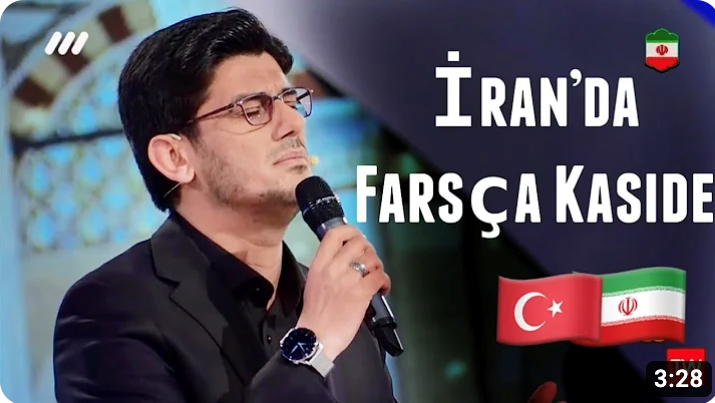
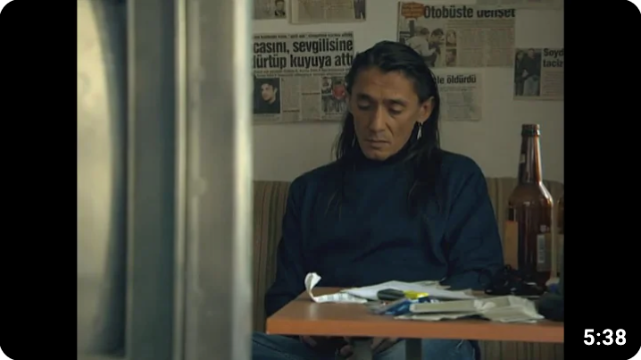
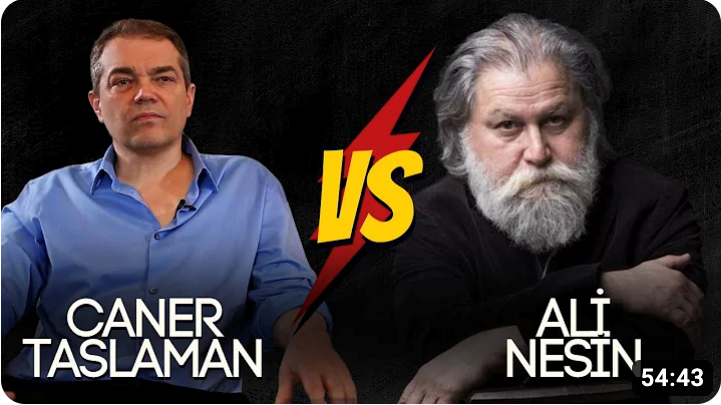
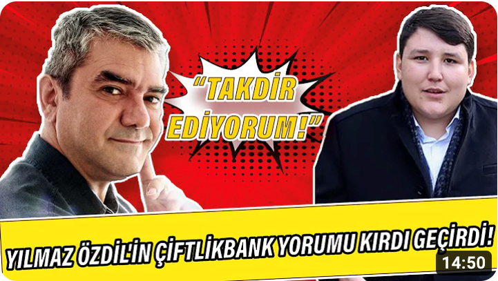

YouTube
TR
K
Ana Sayfa
Shorts
Abonelikler
Kitaplık
Geçmiş
Videolarınız
Daha Sonra İzle
Beğendiğim Videolar
Tümü
Haberler
Müzik
Mix'ler
Canlı
Komedi Skeç Gösterileri
Futbol
Son Yüklenenler
İzlenenler
Yeni Öneriler

Muhsin Kara - İran'da Farsça Kaside 2023
Muhsin KARA
142 B görüntülenme
10 gün önce

Behzat Ç. | Akbaba - Yanımda olsan yeter...
MetehanD
65 B görüntülenme
1 yıl önce

Ali Nesin ve Caner Taslaman Tartışması
Caner Taslaman
85 B görüntülenme
12 gün önce

Yılmaz Özdil'in Çiftlikbank yorumu kırdı geçirdi: Tosunu takdir ediyorum
Halktv
2,5 Mn görüntülenme
4 yıl önce